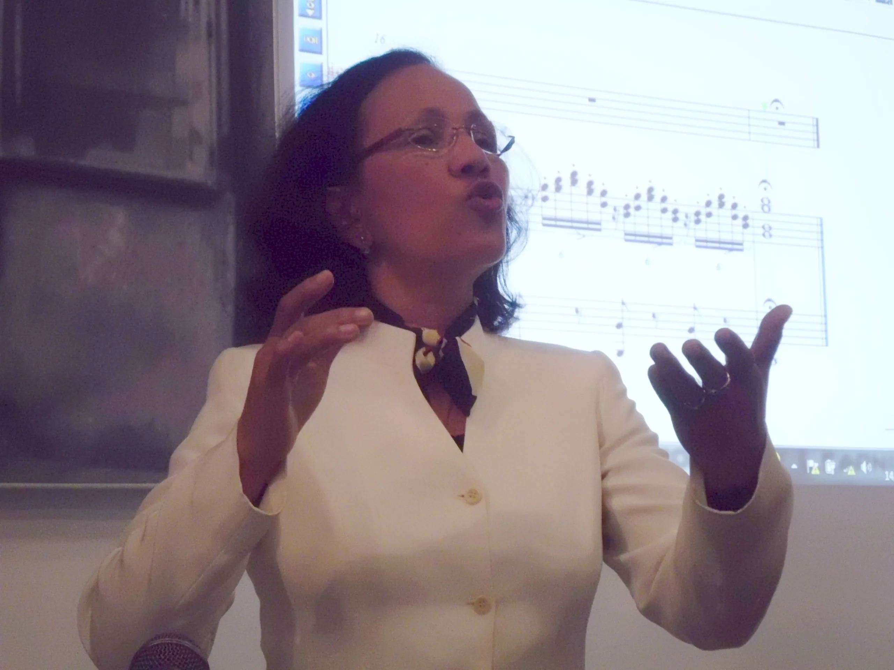
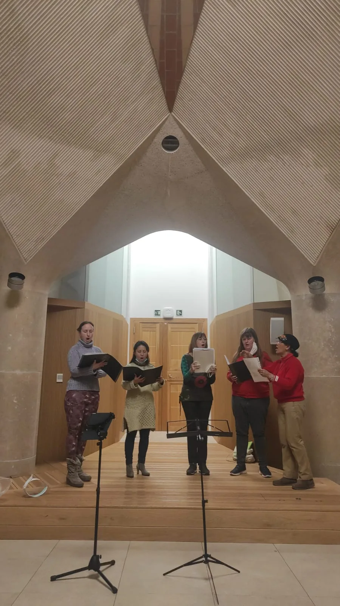
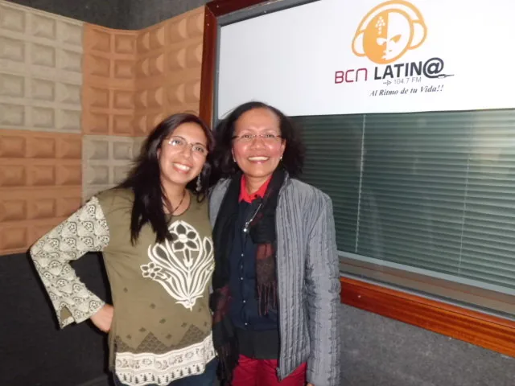

Education, Biomedical Science and Biology
Degrees in Education and Biomedical Science, biologist and clinical researcher.

Carmen Moreno Muñoz
Light lyric soprano, biomedical scientist, biologist, vocal technique teacher and choral conductor. Thirty years devoted to vocal work and the sung sound, a motivation that arose from one question: how is a free sound produced?
“What should I do to become a good singing teacher?”Her question on her first day at the conservatoire. “I am still waiting for the answer”
Who she is
Carmen Moreno was born in Cumaná, on the eastern coast of Venezuela. Before becoming a singing teacher she graduated in Education and in Biomedical Science, and is a biologist. She worked in scientific research and co-authored scientific publications.
That analytical, clinical outlook has never left her. During her classical singing studies with her teachers, Lina and Humberto Diez, producing or imitating a sound was not enough: she wanted to understand which muscles took part in producing it, at what point of the face its position was defined, and which facial movements let her produce a free, brilliant sound and, in other cases, why it came out tight or shrill.
In 1993, in Barcelona, “her teacher” came into her life and showed her the muscular relationship between the face and the production of sound, as well as abdominal breathing. She reached a real understanding of vocal technique and shared the best moments of her musical life with him. In 1995 she began teaching vocal technique to professionals, performers and amateur singers. In 2012 she published her book Mi técnica vocal paso a paso, encouraged and supported by her teacher Ángel Miseri and by the teacher Sara Svat.

Training
Before teaching singing, Carmen had studied human anatomy and physiology at a medical school and trained in teaching didactics. That double training is the foundation of her teaching method.
Degrees in Education and Biomedical Science, biologist and clinical researcher.
The official teaching qualification, completing her degree in Education.
Juan José Landaeta National Conservatory of Music, Conservatori del Liceu and Conservatori Professional de Música de Badalona.
She is studying Musicology, with a focus on performance, at the International Valencian University.
Three vocations, one voice
She has sung at L’Auditori de Barcelona, the Monastery of Pedralbes, the Sant Pau Modernista Site, the Badalona cultural theatre, the cultural hall of Saint-Génis-des-Fontaines (France) and the crypt of the Sagrada Família.
She has taught at a Faculty of Medicine and worked as a clinical analyst, and currently works at the Policlínica de Terrassa. Her training as a biomedical scientist and teacher helped her understand and explain vocal technique with anatomical precision: the involvement of the abdominal muscles, the pterygoids, the levator of the upper lip, the zygomatics, the mentalis and others in the movements that place and sustain the sound.
She has taught vocal technique since 1995, offering the same teaching to everyone who wants to learn or improve, whether professional, soloist or chorister. The aim is for students to reach such technical understanding that they become independent of her teaching and grow into great colleagues in the art of singing.
Carmen in action




I am not the best soprano in the world; I am a soprano of the world who really enjoys her work.Carmen Moreno · 2008


Her routine, in her words
In 2008 Carmen summed up on her blog how she studies each piece. It is the same order she suggests to her students:
Career
A selection of milestones documented by Carmen herself. Filter by facet to follow her teaching, her concerts, her choirs or her work on juries.
In-person lessons for professionals, students and amateur performers: the beginning of the method.
She begins her work as a choral conductor, which would lead her to direct Coral Esperit Cantaire and Coral Nova de Cornellà.
Lope de Aguirre, traidor by José Sanchis Sinisterra, directed by Karel Mena, and Animalmusic, a co-production of Barcelona’s Grec Festival and La Korbata.
Musical direction of the show directed by Alejandra Egido at Sala Pati Llimona and La Farinera del Clot. Her musical direction credits also include Cançó d’amor i de guerra by Martínez Valls.
She sings the “Cantilena” from Villa-Lobos’ Bachianas Brasileiras No. 5, one of her favourite arias.
International Golden Nightingale Choir Festival in Carmarthen (Wales). She has taken part in choral festivals ever since.
Invited by the Dafne Foundation, the choir performs at the auditorium of the Oviedo Conference Centre and at the cultural centre in Grado.
At Sala Mas in Barcelona: García Abril, the Song to the Moon from Dvořák’s Rusalka and Mozart’s Queen of the Night.
Juror at the International Krakow Choir Festival and a tour of Galicia with Coral Nova de Cornellà.
A concert series featuring Orff’s Carmina Burana. The choir has sung in Italy, Poland, Austria, the Vatican and Andorra. That year Carmen sits on the jury in Kraków and at the 3rd International Youth Music Festival in Bratislava.
Launched on Sant Jordi’s Day on Rambla de Catalunya, with her editor. The book includes a 3D DVD. That summer she returns to Kraków as a juror.
First talk, “Singing and vocal technique, the soloist and the choir”, at the Aula d’Extensió Universitària. She publishes two articles in ArtsEduca magazine and sits on the jury of the IV Krakow Choir Festival.
She founds her female chamber group, which makes its debut on 30 November at Sant Pau del Camp. She is a juror at the X Varsovia Cantat and gives a talk at the Biblioteca Clarà.
The IFCM’s International Choral Bulletin publishes her article on vocalising with the choir before singing. She sits on the jury of the Cantonigròs International Music Festival in Vic.
She organises the 1st International Festival of Latin American Music Performers with Cantoría Re-Quinto, and returns to Warsaw as a juror.
An intimate recital at the Monastery of Pedralbes with harpist Mercè Guilera, a concert in the Modernista Hall of the Sant Pau site and a tribute to pianist Francesc Busquets.
Cantoría Re-Quinto prepares Saint-Saëns’ Oratorio de Noël in the crypt of the Sagrada Família, with an open charity rehearsal. Juror at Varsovia Cantat.
An international festival of sacred choral music that Carmen remembers as “the best festival I have taken part in”.
Between 2020 and 2022 she teaches seven weekly online courses “with very good results”. That is where the idea of her online school was born.
She completes the seven-lesson series Mi técnica vocal paso a paso, a simple summary of her research work.
Cantoría Re-Quinto sings in the Basilica and crypt of the Sagrada Família, with Hernando Franco’s Psalmus 6 (Mexico, 1611) as the great challenge. In November, juror at the 16th International Warsaw Choir Festival.
An open-air concert of traditional music from Puerto Rico, Ecuador, Venezuela and Suriname, and Baroque works from Mexico, Peru, Ecuador and Guatemala, sung in Nahuatl and Quechua.
Her website Mi técnica vocal paso a paso is relaunched to include an online singing school.
Gratitude
Carmen never talks about her method without naming those who trained her.
She is grateful for the teaching of Lucía Guitliz, Lina Brando, Humberto Diez and Eliseo Fernández. And she reserves her “deepest devotion and eternal gratitude” for Ángel Miseri and Sara Svat, for everything they taught her about vocal technique and for awakening her calling to teach it.
Publications
Besides her book, Carmen has written about vocal technique and choral conducting in specialist journals.
International Choral Bulletin, vol. XXXIV, no. 2, in the dossier on warming up and warming down. Published by the International Federation for Choral Music. Read the Spanish edition
ArtsEduca magazine, no. 9, pp. 30–37 (in Spanish).
ArtsEduca magazine, no. 4, pp. 90–93 (in Spanish). Read a summary
ArtsEduca magazine, no. 4, pp. 38–40 (in Spanish).
Her complete method, with a 3D DVD. Discover the book

Your first lesson
Tell me your goal, project or intention with singing; we agree a line of vocal work and choose a convenient schedule, online or in person, here in Barcelona.